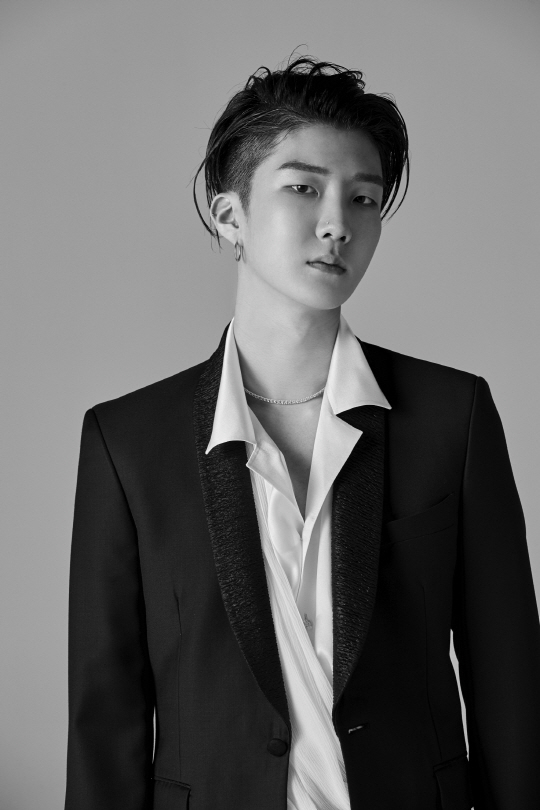
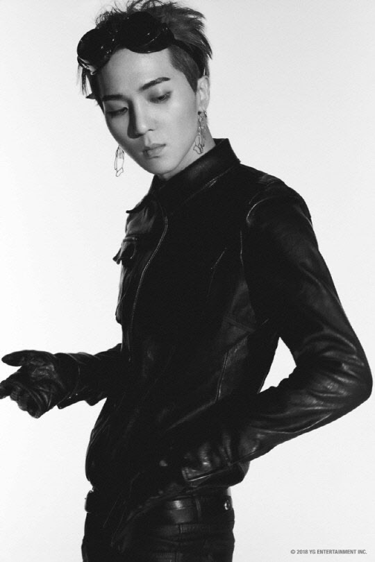

隊名的由來意味着WINNER出道的生存節目《WIN: Who is Next?》中的冠軍(WINNER),
同時蘊含着"將以真誠的音樂成爲歌謠界真正的WINNER"的抱負。
另外,據隊長姜昇潤透露,WINNER的"希望所有聽音樂的人都能成爲WINNER"
<Debut Song>
-----------------------------------------------------------------------------------------------
-----------------------------------------------------------------------------------------------
本名: 金秦禹 (김진우）
出生: 1991年9月26日[2](滿31歲)
國籍: 韓國
本名: 李昇勳 (이승훈）
出生: 1992年1月11日[延期入學](30歲)
國籍: 韓國

本名: 宋旻浩 (송민호）
出生: 1993年3月30日(29歲)
國籍: 韓國

本名:
姜昇潤 (강승윤）
出生: 1994年1月21日(28歲)
國籍: 韓國
YG | Kpop World